A guided tour
tour.RmdThis article walks through all full guide extensions to give a broad overview of the ‘easy’ way to make use of gguidance. Rest assured, there are harder ways, but these will be covered in a separate article.
Axes
Axes truly are the bread and butter of guides. Naturally, axes shine
brightest as guides for positions like x and y
but can moonlight as auxiliary guides as well.
Where (not) to apply
In gguidance, the staple axis is guide_axis_custom(). At
a first glance, these axes are utterly unremarkable and very much mirror
ggplot2::guide_axis() by design.
# Turn on axis lines
theme_update(axis.line = element_line())
# A standard plot
standard <- ggplot(mpg, aes(displ, hwy)) +
geom_point() +
labs(
x = "Engine Displacement (Litres)",
y = "Highway Miles per Gallon"
)
standard + guides(
x = "axis_custom",
y = "axis_custom"
)
In terms of novelty, the only ‘extra’ option these axes offer is to display bidirectional tick marks.
p <- standard +
scale_x_continuous(guide = guide_axis_custom(bidi = TRUE)) +
scale_y_continuous(guide = guide_axis_custom(bidi = TRUE))
p
However, guide_axis_custom() is more flexible than
ggplot2::guide_axis(). In ggplot2, you’d typically have to
switch to ggplot2::guide_axis_theta() to display an axis
for the theta coordinate of a polar plot. The custom axis
knows how to fit into polar coordinates, so no such fuss is needed when
switching to polar coordinates.
p + coord_radial(start = 1.25 * pi, end = 2.75 * pi)
Argueably, the custom guide is a little bit too flexible. It has
exactly no scruples in displaying arbitrary continuous aesthetics, like
colour in the plot below. As you can see, it is not
informative as a colour guide and for this reason I’d advice against it.
Why this unadvised yet possible is a topic that resurfaces later in this
article.

In summary, guide_axis_custom() is a flexible guide that
can be used in any and all position aesthetic, and can (but should not)
be used for other continuous aesthetics.
Keys
The way guides exchange information with scales is through so-called
‘keys’, which you can retrieve using
ggplot2::get_guide_data(). In gguidance, you have to option
to change what information is exchanged through the key
argument.
If you’ve browsed the documentation of
guide_axis_custom(), you might have noticed that there is
no visible option to display minor ticks. To extract the minor ticks, we
can use key = "minor", which invokes the
key_minor() function to extract the minor breaks from the
scale.
standard +
guides(x = guide_axis_custom(key = "minor"))
Likewise, there is no logarithmic variant of
guide_axis_custom(), as this is again a specialty
extraction operation. The equivalent of using
ggplot2::guide_axis_logticks() is to use
key = "log". If you need to tweak the options you can use
the key_log() function instead of the keyword, as is the
case for the y-axis in the plot below where we manually log-transformed
the brainwt variable.
ggplot(msleep, aes(bodywt, log2(brainwt))) +
geom_point(na.rm = TRUE) +
scale_x_log10(
name = "Body weight (kg)",
guide = guide_axis_custom(key = "log")
) +
scale_y_continuous(
name = "Brain weight (kg)",
guide = guide_axis_custom(key = key_log(prescale_base = 2))
) +
theme(axis.ticks.length = unit(2, "mm"))
Alternatively, you can construct a key yourself by using
key_manual(), where you have to provide the value for the
aesthetic, and the label you want to use.
freq <- table(mpg$class) |> as.data.frame()
key_manual(aesthetic = freq$Var1, label = paste0("n = ", freq$Freq))
#> aesthetic .value .label
#> 1 2seater 2seater n = 5
#> 2 compact compact n = 47
#> 3 midsize midsize n = 41
#> 4 minivan minivan n = 11
#> 5 pickup pickup n = 33
#> 6 subcompact subcompact n = 35
#> 7 suv suv n = 62The non-standard evaluation equivalent of key_manual()
is key_map() which works in a similar way, but is more
suited when piping data frames. A nice thing about these function is
that they are a good way to generate secondary axes for discrete scales.
At the time of writing, this isn’t really possible in ggplot2
itself.
key <- table(mpg$class) |>
as.data.frame() |>
key_map(aesthetic = Var1, label = paste0("n = ", Freq))
ggplot(mpg, aes(class, displ)) +
geom_boxplot() +
labs(
x = "Type of car",
y = "Engine Displacement (Litres)"
) +
guides(x.sec = guide_axis_custom(key = key))
Colours
The colour and fill aesthetics are
wonderful to build guides for, as they can apply to pretty much
anything. First, we’ll take a gander at some variants of colour bars
before we gander at rings.
Bars and steps
Two variants for colour guides exist in {gguidance}:
-
guide_colourbar_custom()that reflectsguide_colourbar() -
guide_coloursteps_custom()that reflectsguide_coloursteps().
When used in a standard fashion, they look very similar to their vanilla counterparts.
standard <- standard +
aes(colour = cty) +
labs(colour = "City Miles\nper Gallon")
standard +
scale_colour_viridis_c(guide = "colourbar_custom") +
labs(title = "Custom colour bar")
standard +
scale_colour_viridis_b(guide = "coloursteps_custom") +
labs(title = "Custom colour steps")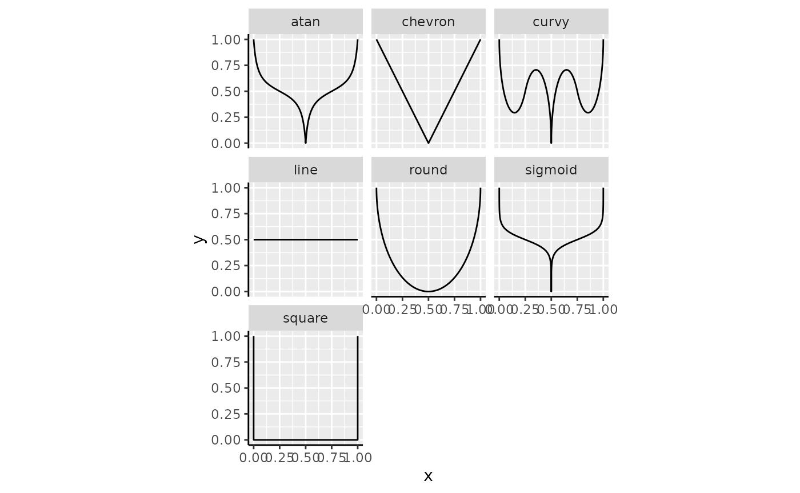
Please not that the following paragraphs apply equally to
guide_coloursteps_custom(), but we’ll take
guide_colourbar_custom() for examples.
Caps
The thing that sets these guides apart is that they have indicators
for when the data goes out-of-bounds. The most common case where you
have out-of-bounds data, is when you set the scale limits to be narrower
than the data range. In the plot below, the cty variable
has a few observation below the lower limit of 10, and a few above the
upper limit of 30. Typically, these are displayed in the
na.value = "grey" colour. The bars display that these data
are out-of-bounds by the gray ‘caps’ at the two ends of the bar.
standard +
scale_colour_viridis_c(
limits = c(10, 30),
guide = "colourbar_custom"
)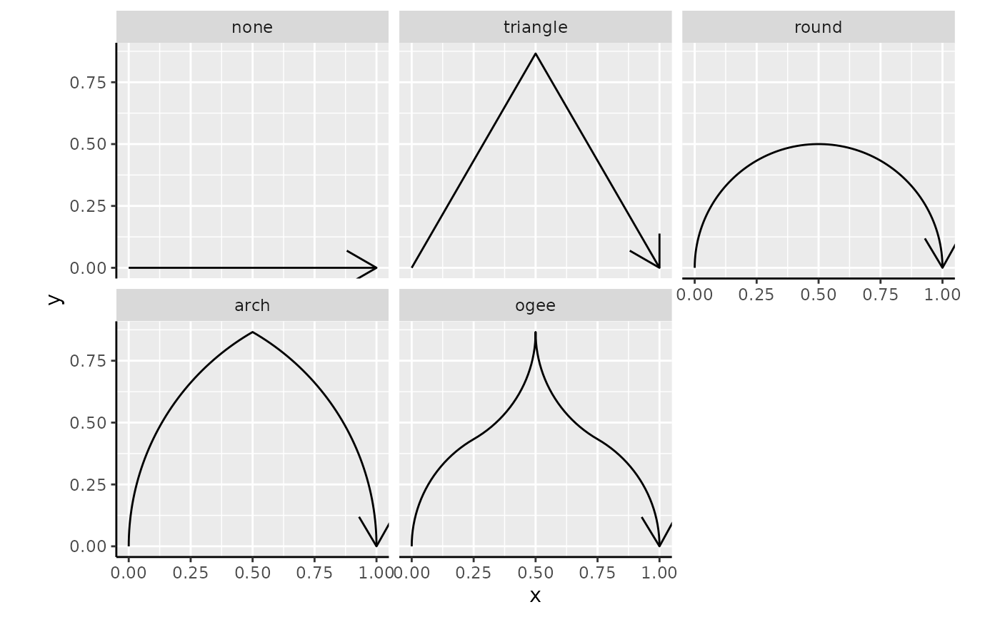
You can change the out-of-bounds strategy, the oob
argument of the scale, to have the caps reflect the colour that
out-of-bounds data has acquired.
standard +
scale_colour_viridis_c(
limits = c(10, 30), oob = oob_squish,
guide = "colourbar_custom"
)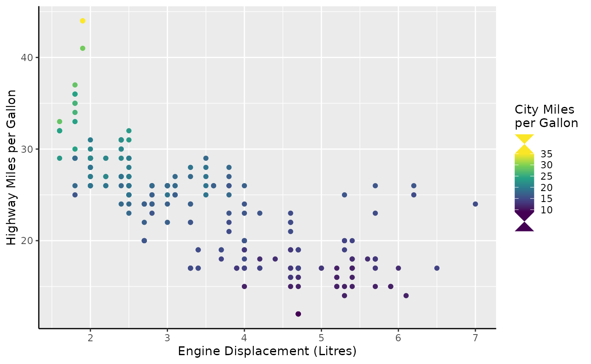
You can also force the caps to appear, even when there are no out-of-bounds data, or force the cap colour to be consistent with the scale.
standard +
scale_colour_viridis_c(
guide = guide_colourbar_custom(
show = c(FALSE, TRUE),
oob = "squish"
)
)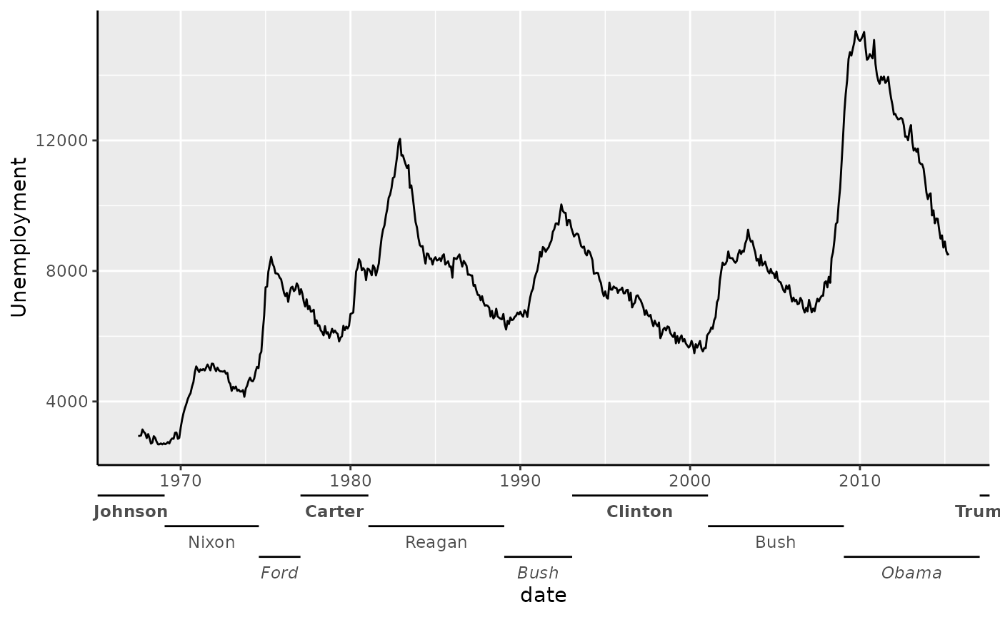
The shape of the cap needn’t be a triangle. You can set the shape to any of the built-in cap shapes.
standard +
scale_colour_viridis_c(
guide = guide_colourbar_custom(
show = TRUE, oob = "squish",
shape = "arch"
)
)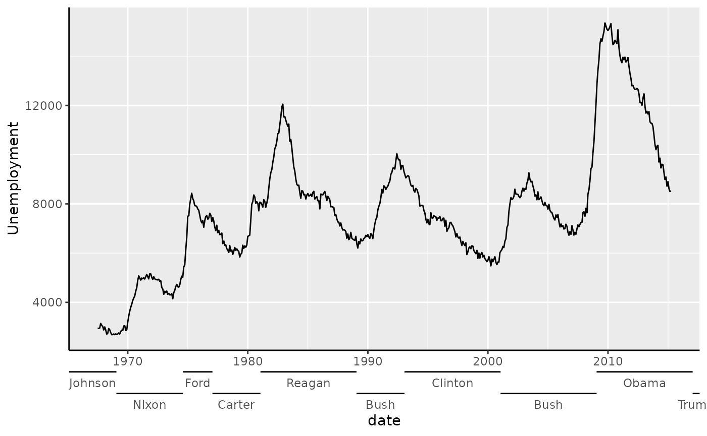
The caps can be provided as a string naming a cap function, like
"arch" that invokes cap_arch(). Below follows
an overview of all the build-in cap shapes.
caps <- list(
none = cap_none(),
triangle = cap_triangle(),
round = cap_round(),
arch = cap_arch(),
ogee = cap_ogee()
)
caps <- cbind(
as.data.frame(do.call(rbind, caps)),
shape = factor(rep(names(caps), lengths(caps) / 2), names(caps))
)
ggplot(caps, aes(x, y)) +
geom_path(arrow = arrow()) +
facet_wrap(~ shape) +
coord_equal()
It is most certainly possible to use shapes of your own imagination as well. To provide your own shape, use a numeric matrix that:
- Has 2 columns corresponding to the x and y coordinates.
- Has at least 2 rows.
- Only has positive values for the 2nd column (y).
- Start at the (0, 0) coordinate.
- End at the (1, 0) coordinate.
You can see in the shapes above that these requirements all hold for
the built-in shapes. Such a matrix can be given to the
shape argument of the guide.
hourglass_cap <- cbind(
x = c(0, 1, 0, 1),
y = c(0, 1, 1, 0)
)
standard +
scale_colour_viridis_c(
guide = guide_colourbar_custom(
show = TRUE, oob = "squish",
shape = hourglass_cap
)
)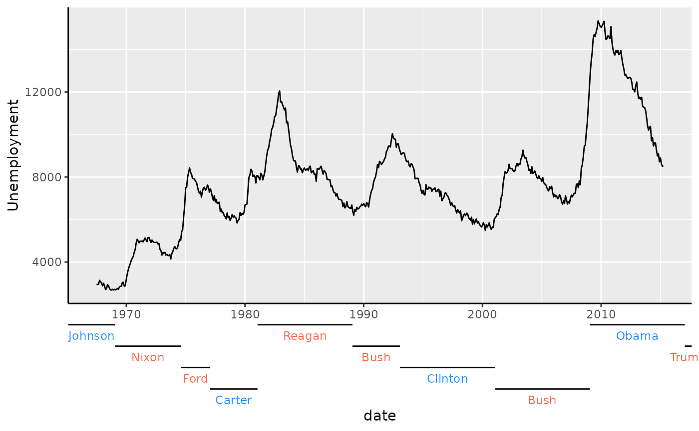
Side-guides
The colour bars come with a small party trick: the two rows of tick
marks are separate axes masquerading as parts of the colour bar. It
becomes easier to see once you wash away their make-up with
vanilla = FALSE.
standard +
scale_colour_viridis_c(
guide = guide_colourbar_custom(vanilla = FALSE)
)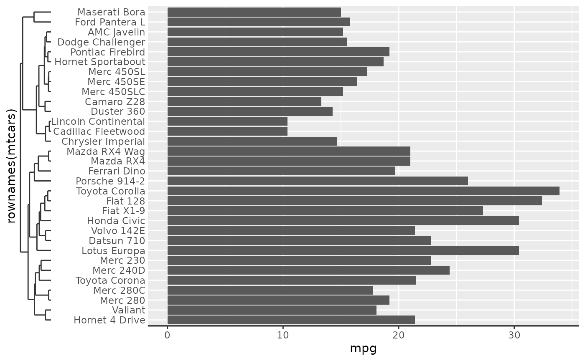
This trick allows you to tailor the colour bar to your liking on
separate sides. You can use this to invoke any of the tricks described
in the axis section, like setting minor ticks, or swap out axes for an
annotation-primitive like primitive_bracket().
brackets <-
key_range_manual(
start = c(9, 25),
end = c(19, 30),
name = c("A", "B")
) |>
primitive_bracket(bracket = "square")
standard +
scale_colour_viridis_c(
minor_breaks = breaks_width(1),
guide = guide_colourbar_custom(
first_guide = guide_axis_custom("minor"),
second_guide = brackets
)
)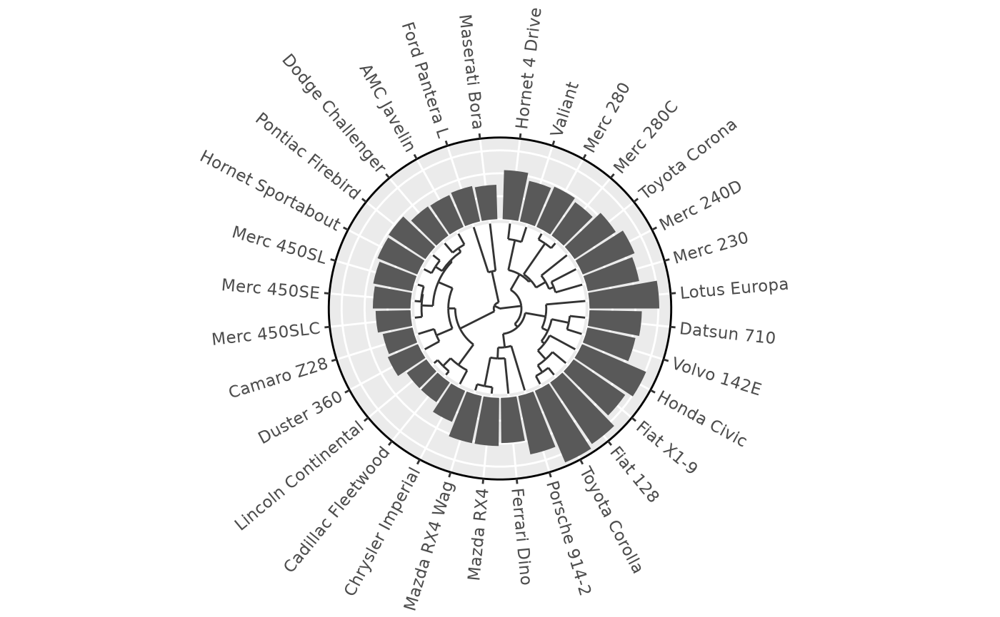
Rings
Aside from bars and steps, there is also an option to show the colour as a ring. To understand why this might convenient, it can help to understand the type of data this is suitable for. A prime example of cyclical data can be the month of the year. The time between December and January is just one month, but when encoded numerically, the difference is 11 months. This problem can show itself sometimes in periodic data, like housing sales below.
housing <-
ggplot(
subset(txhousing, city == "Houston"),
aes(date, volume, colour = month)
) +
geom_line() +
scale_y_continuous(
name = "Total volume of sales",
labels = dollar_format(scale = 1e-6, suffix = "M")
) +
labs(
x = "Date",
colour = "Month"
)
housing +
scale_colour_viridis_c(limits = c(0, 12))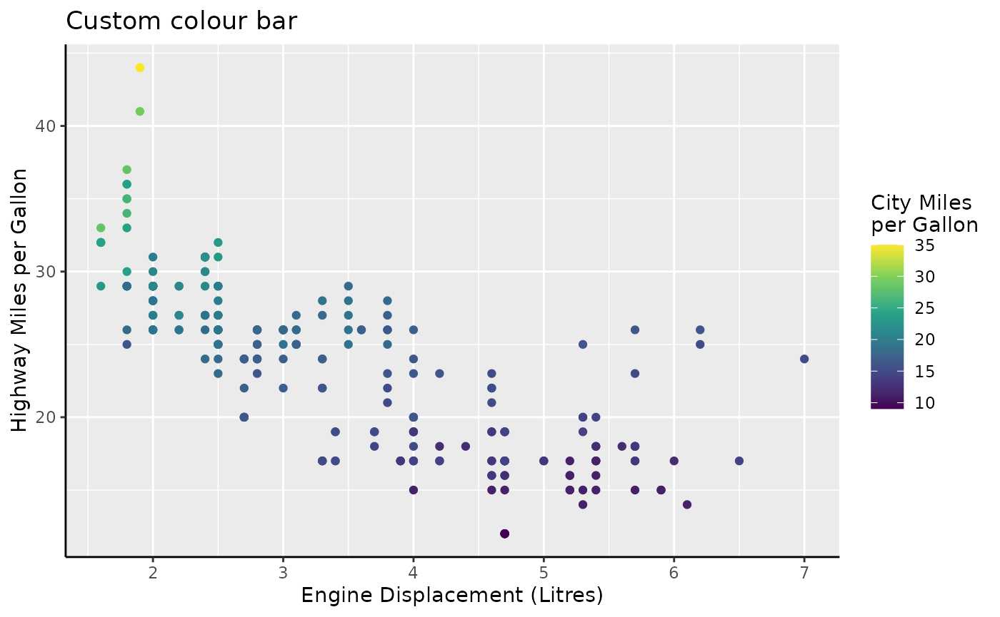
Every year we get a sharp colour transition in the winter. The remedy for this problem is to use a cyclical palette. The {scico} package offers some suitable cyclical palettes, like ‘romaO’, ‘vikO’, ‘bamO’, ‘corkO’ or ‘brocO’.
# Colours from scico::scico(12, palette = "romaO")
periodic_pal <-
c("#723957", "#843D3A", "#97552B", "#B08033", "#CBB45D", "#D5DA99",
"#B8DEC3", "#85C7CF", "#599FC4", "#4E73AB", "#5F4C81", "#723959")
housing +
scale_colour_gradientn(colours = periodic_pal, limits = c(0, 12))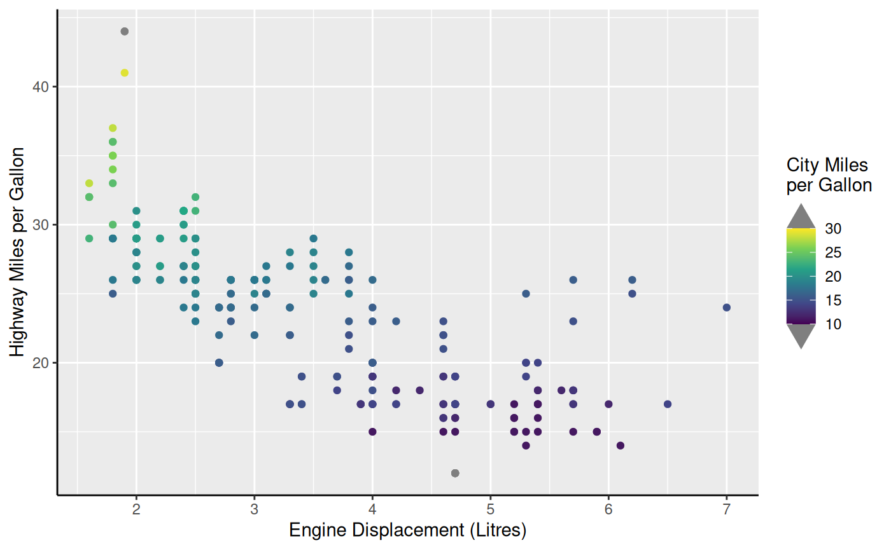
This is already much better, but the guide itself does a poor job of
displaying the cyclical nature of months. To have this better reflected
in the guide, you can use guide_colour_ring().
housing +
scale_colour_gradientn(
colours = periodic_pal, limits = c(1, 13),
breaks = 1:12,
guide = "colour_ring"
)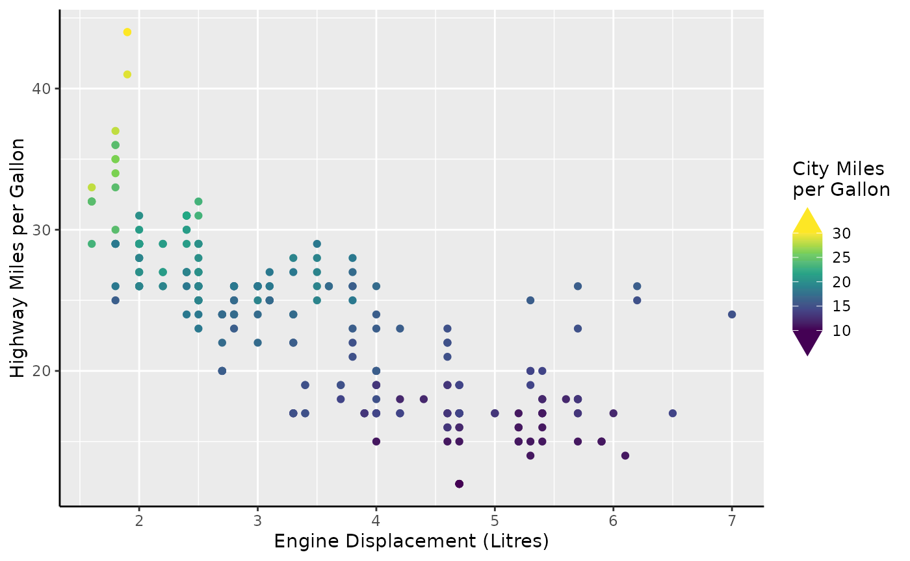
The ‘thickness’ of the donut can be controlled by the
legend.key.width parameter, which by default is
1/5th of the diameter. The outer diameter of the ring is
controlled by the legend.key.size parameter, but multiplied
by 5 for consistency with the colour bar multiplier. Like custom colour
bars, it is possible to set custom guides, but these are hoarded under
the inner_guide and outer_guide to distinguish
that they aren’t first or second.
housing +
scale_colour_gradientn(
colours = periodic_pal, limits = c(1, 13),
breaks = 1:12, minor_breaks = breaks_width(0.25),
guide = guide_colour_ring(
outer_guide = guide_axis_custom("minor"),
inner_guide = "none"
)
) +
theme(
legend.key.width = rel(2.5), # fill to center
legend.key.size = unit(0.5, "cm") # actual size is 0.5 * 5 = 2.5 cm
)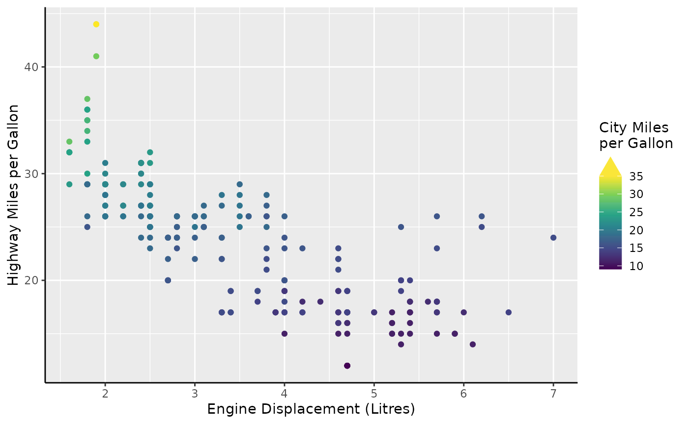